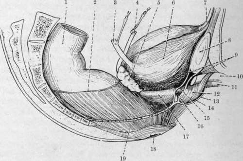

The Prostate
Description
This section is from the book "Surgical Anatomy", by John A. C. MacEwen. Also available from Amazon: Surgical Anatomy.
The Prostate
The Prostate has been compared in size and shape to a Spanish chestnut. It is 1¼ inches long, 1½ inches broad, and ¾ inch in antero-posterior depth. Normally it weighs 6 drams, but may be considered to be enlarged when it weighs an ounce and measures 2 inches from side to side. Its base is firmly attached to the base of the bladder, and its apex, directed downwards and forwards, is related to the posterior layer of the triangular ligament and the compressor urethrae muscle. It is situated about ¾ inch below the symphysis pubis, and 1½ to 2 inches from the anus. It is traversed by the urethra, which runs almost vertically through it, with a slight anterior concavity at the junction of its anterior one-third with the posterior two-thirds, and emerges just in front of its apex. The pre-urethral segment-is mainly composed of smooth muscular-tissue, and is separated from the pubis by fatty tissue and its own capsule. The retro -urethral segment presents two lateral lobes not separated superficially, and an upper wedge-shaped portion or so - called middle lobe, which lies immediately beneath, the trigone, and is separated from the underlying lateral lobes by the ejaculatory ducts, which, entering the prostate posteriorly, run downwards, forwards, and inwards, to enter the urethra close together on the summit of the verumontanum, which occupies the posterior wall of the prostatic urethra.
The lateral lobes contain a considerable proportion of glandular tissue. The glands are irregularly arranged, are lined by columnar epithelium, and their ducts pierce the floor of the urethra on either side of the verumontanum. The un-striped muscular tissue is best developed in the cortical portion of the gland, and in that surrounding the urethra. Surrounding the prostate, and particularly occupying a deep sulcus between the base of the bladder and the mass of the gland, is a rich venous plexus, the vesico-prostatic plexus. These veins are tortuous and well supplied with valves, but in cases of prostatic enlargement they frequently become dilated and varicosed, and, indeed, they frequently play a considerable part in rapidly occurring urethral obstruction caused by prostatic enlargement. In addition to its own proper capsule, composed of connective tissue and unstriped muscular fibres, the prostate possesses a tough fibrous capsule, derived from the recto-vesical layer of pelvic fascia, which encloses both the gland and the venous plexus.
Prostatitis, or inflammation of the prostate, is generally, when acute, due to urethral infection, frequently gonorrhoea, and may give rise to prostatic abscess, which may be single or multiple. Such abscesses, if untreated, generally burst into the urethra, sometimes into the rectum, and occasionally into both, causing a fistula. They may also discharge into the pelvic cellular tissue and point above Poupart, or even in the perineum, but this is unlikely, as the pubo-prostatic ligaments of the pelvic fascia are dense, and cut off the prostate from the pelvis on the one hand, while the prostatic capsule is continuous with the lower border of the posterior layer of the triangular ligament on the other. Prostatic abscess is acutely painful, owing to this dense encapsulation ; and as the gland derives its nerve-supply from the lower three dorsal (especially the tenth) and upper three sacral segments, the pain may be referred over a wide area, between the tip of the last rib and soles of the feet. The lymphatics pass to glands situated on the pelvic wall between the external and internal iliac vessels. A thrombo-phlebitis may be caused by invasion of the prostatic plexus. Prostatic abscesses may be evacuated by a mesial perineal incision between the bulb and the anus through the skin, cellular tissue, perineal body (a mass of fibrous and fatty tissue), base of the triangular ligament, compressor urethrae, levator ani, prostatic capsule, and gland substance. Chronic inflammatory conditions of the prostate are generally due to tubercle, affecting the vesiculi seminales, testicles, or bladder.
Senile prostatic hypertrophy, occurring after the age of fifty-three, is the most common affection of the gland, generally due to irregular new gland-like formation. The prostatic urethra is elongated, compressed laterally, and its curvature increased, the outlet of the bladder being raised, and hence micturition is impeded, and the posterior prostatic pouch is liable to form. Frequently also the urethra may become twisted, owing to unilateral enlargement. Owing to the alteration in length and curve of the prostatic urethra, it is frequently necessary to use a prostatic catheter in enlarged prostate. A gum-elastic coude catheter may also be employed with advantage. In such cases the gland may be removed by a suprapubic operation, or through the perineum (prostatectomy), or it may generally be caused to atrophy by division of the vasa defer-entia, or by castration. In the former, while the prostatic urethra is of course much damaged in removal of the gland, the external capsule remaining intact prevents the risk of extravasation of urine, while in the latter the perineal wound affords free drainage. The function of the prostate is supposed to be the secretion of a thin milky acid fluid, which acts as a vehicle for the spermatozoa, and stimulates them to activity. While it affords support to the urethra, it probably does not assist micturition.
The vesiculi seminales, about 2 inches long, roughly triangular in section, and presenting a tuberculated appearance, are situated at the base of the bladder, to which their anterior surfaces are applied, while their posterior surfaces are moulded on the anterior rectal wall. The upper extremities are wide apart, are partially invested by the peritoneum of the rectovesical pouch, and are separated from contact with the bladder-wall by the termination of the ureters, while the pointed lower extremities lie close together in the transverse fissure at the base of the prostate, where they join the outer aspect of the corresponding vas, from which point the common ejaculatory ducts pass down close together through the prostate, to open on the summit of the verumontanum. The vesiculi seminales are enclosed in a sheath derived from the recto-vesical fascia. They may be affected by acute or chronic inflammatory processes. The former, frequently gonorrhoeae may lead to abscesses, which may burst into the peritoneum, rectum, or perineum. The latter are generally secondary to tubercular epididymitis. The vesiculi seminales may be reached by a curved incision in front of the anus.
The vas deferens, some 18 inches long, and extending a distance of about 12 inches, continues the canal of the epididymis to the ejacnlatory duct. It may be divided into an abdominal and external portion. From the point where it opens into the ejaculatory ducts, the vas runs upwards along the inner border of the vesiculi seminales, and becomes wider and tortuous and sacculated for a short distance, this portion being called the ampulla. At the apex of the vesiculi it passes between the ureter and bladder, and then turns forwards, upwards, and outwards along the lateral pelvic wall, immediately under the peritoneum, and crosses the vesical vessels, obturator vessels, and nerve, and obliterated hypogastric artery. On reaching the pelvic brim, it crosses the ileo-pectineal line fully 1½ inches from the pubic spine, and then runs forwards and outwards, turns round the outer side of the deep epigastric artery, and enters the inguinal canal by the internal ring. In the inguinal canal it is joined by the other structures of the spermatic cord, to which it lies posterior, and runs downwards, inwards, and a little forwards to the external ring, after emerging from which it turns downwards over the pubic crest. Then, leaving the other structures of the cord, and becoming thinner and tortuous, it passes down along the inner side of the epididymis, with which it becomes continuous at the globus minor.
Fig. 33.-The Viscera of the Male Pelvis (Lateral View). (From Buchanan's "Anatomy.")
1. | Pelvic colon. | 11. | Corpus spongiosum. |
2. | Line of peritoneal reflection. | 12. | Bulb and bulbo-cavernosus. |
3. | Ureter. | 13. | Colles' fascia. |
4. | Vas deferens. | 14. | Perineal pouch. |
5. | Vesícula seminalis. | 15. | Membranous urethra. |
6. | Bladder. | 16. | Cowper's gland. |
7. | Urachus. | 17. | Prostate gland ani capsule. |
8. | Symphysis pubis. | 18. | Anus. |
9 | Triangular ligament of urethra. | 19. | Levator ani (cut). |
10. | Corpus cavernosum. |
The spermatic cord consists of the vas deferens and cre-master muscle, artery to the vas, cremasteric and spermatic arteries, pampiniform plexus of veins, genito-crural and sympathetic nerves, and lymphatics. The vas deferens lies at the posterior aspect of the cord, and imparts a firm, cord-like sensation to the examining fingers. It has been ruptured in severe exertion, and is sometimes tied in cases of enlarged prostate.
Continue to: